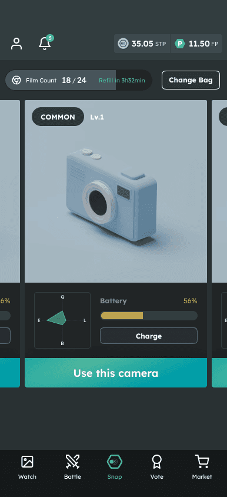
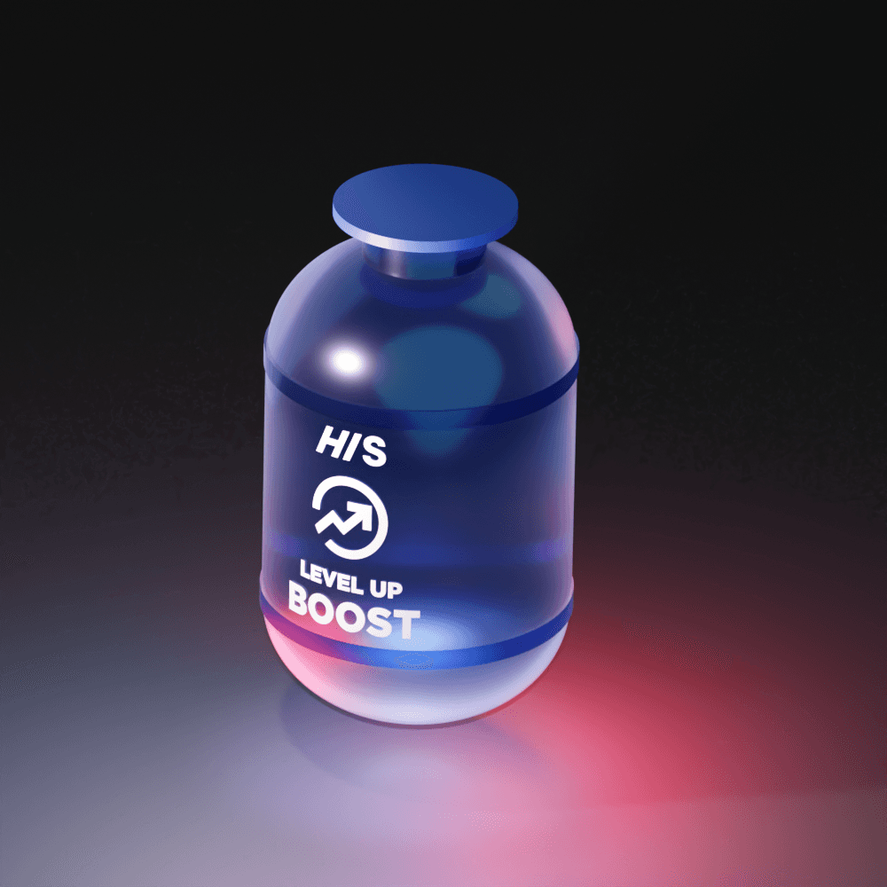

SNPITとは？
SNPIT（スナップイット）は、世界初の「Snap to Earn」アプリです。写真を撮るだけでトークン（ポイント）を稼ぐことができます。
キャッチコピーは「Snap, Battle, Connect（撮る、戦う、繋がる）」。無料で始められ、Google Playで100万ダウンロードを突破しています。
開発はSNPIT Studio FZCO。Polygonチェーン上で動作する本格的なWeb3アプリですが、暗号資産の知識がなくても楽しめます。
始め方（3ステップ）
1
App Store / Google PlayでSNPITをダウンロード
2
メールアドレスで登録
3
フリーカメラで写真を撮って、すぐにポイント獲得！
フリーカメラは最初から1台もらえます。NFT（課金）カメラを買わなくても、すぐにプレイ開始できます。
稼ぎ方の基本

SNPITでは主に3つの方法でトークンを稼げます。
| 方法 | もらえるもの | 必要なもの |
|---|---|---|
| 写真撮影（フリーカメラ） | FP（フリーポイント） | フリーカメラ + フィルム |
| 写真撮影（NFTカメラ） | STP（SNPITポイント） | NFTカメラ + フィルム |
| バトルで勝利 | FPまたはSTP | メインバトルはQuality30以上のカメラで撮影した写真が必要。カジュアルバトルは制限なし |
| 投票に参加 | STP | 誰でも参加可能（NFT未保有7票/日、NFT保有+5票、サブスク+2票） |
トークン（ポイント）の種類
| 名前 | 説明 | 交換先 |
|---|---|---|
| FP（フリーポイント） | フリーカメラで獲得。カジュアルバトル勝利でも獲得可能 | 電子マネー / BTC（1,000円～交換可） |
| STP（SNPITポイント） | NFTカメラで獲得。メインバトル勝利・投票でも獲得 | SNPT（暗号資産）に交換可 |
| SNPT（SNPITトークン） | 暗号資産。MEXC・Gate.io・Zaifに上場 | 取引所で売買可能 |
FP・STPの残高はアプリ上部ヘッダー右上に常時表示。獲得履歴はプロフィール → 設定 →「履歴」で確認できます。
フィルムの仕組み
写真を撮るにはフィルムが必要です。1回の撮影で1枚消費します。
- 初期フィルム上限：2枚（フリーカメラ1台の場合）
- 回復速度：6時間ごとに0.5枚回復
- 撮影には1枚以上必要（0.5枚では撮影できない）
- フィルム上限を増やすには、カメラの台数を増やす必要あり
レベルアップではフィルム上限は増えません。カメラの台数だけがフィルム上限に影響します。
バトルの仕組み
撮影した写真を使って他のプレイヤーと対戦できます。バトルには2種類あります。
| バトル種類 | 参加条件 | 報酬 |
|---|---|---|
| カジュアルバトル | 誰でも参加可能 | FP |
| メインバトル | Quality30以上のカメラで撮影した写真 | STP |
クオリティは、カメラのQualityステータスで決まります。フリーカメラでもレベルを上げればQuality30に到達可能です。
カメラのレベルアップ

カメラはレベルアップすることでステータスを強化できます。最大レベルは31です。
- NFTカメラ：レベルアップにSTPが必要
- フリーカメラ：レベルアップにFPが必要（合計約564FP）
- レベルアップ所要時間：レベルが上がるごとに1時間ずつ増加
- 全レベル合計：約495時間（連続で約20日）
カメラには4つのステータスがあり、レベルアップ時にポイントを割り振れます。
| ステータス | 効果 |
|---|---|
| Quality（画質） | 写真のクオリティが上がる。バトル参加条件にも影響 |
| Efficiency（効率） | 撮影時の獲得ポイント量が増える |
| Luck（運） | ミステリーボックスの出現率に影響 |
| Battery（バッテリー） | 故障率が下がる・バッテリー消費に影響 |
もっと詳しく知りたい？
スナピーに聞く
SNPITのこと、何でも答えるよ！
›